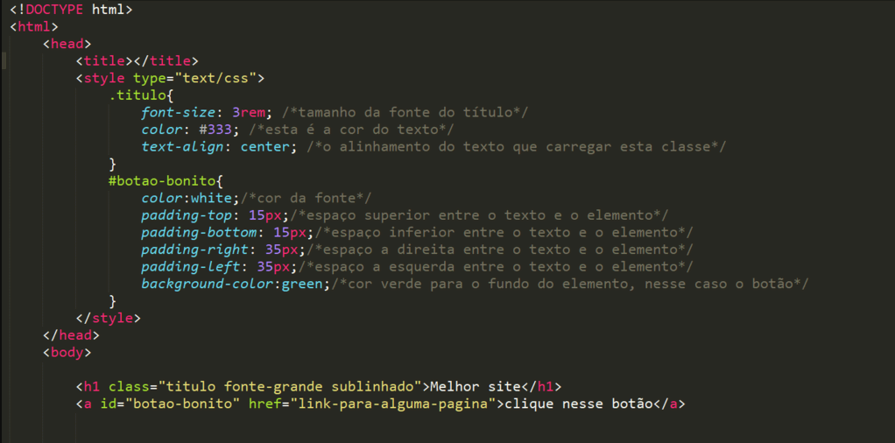

CSS (1996)
O CSS (Cascading Style Sheets), criado em 1996 pelo World Wide Web Consortium (W3C), é uma linguagem de estilo utilizada para definir a apresentação e o design de documentos HTML. O CSS complementa essa funcionalidade ao adicionar estilos, layouts e efeitos visuais.
O principal motivo para a criação do CSS foi separar a camada de apresentação da camada de estrutura dos documentos web. Antes do CSS, o estilo das páginas web era definido diretamente no código HTML, o que tornava a manutenção e a atualização dos estilos uma tarefa complexa e trabalhosa.

O CSS oferece um conjunto de regras e propriedades que permitem aos desenvolvedores controlar o posicionamento, a cor, o tamanho, a fonte e outros atributos. Com o CSS, é possível criar layouts responsivos, ajustar o espaçamento entre os elementos, aplicar transições e animações, e personalizar completamente a aparência de um site.
Atividade desenvolvida como extensão no projeto
PACEX/Mundo Tech do curso de análise e Desenvolvimento de Sistemas
Unipar - Cascavel